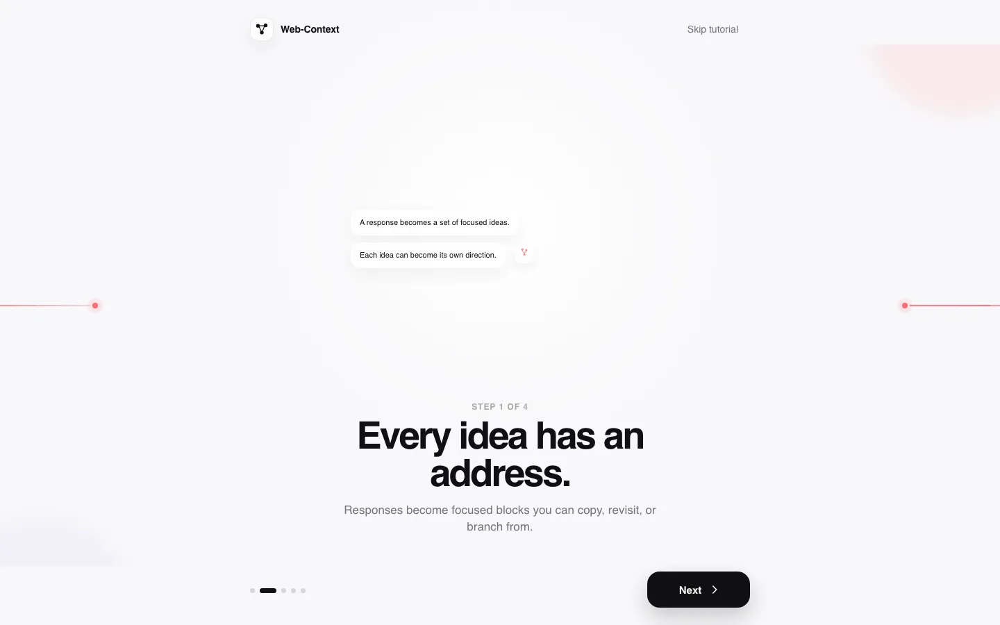
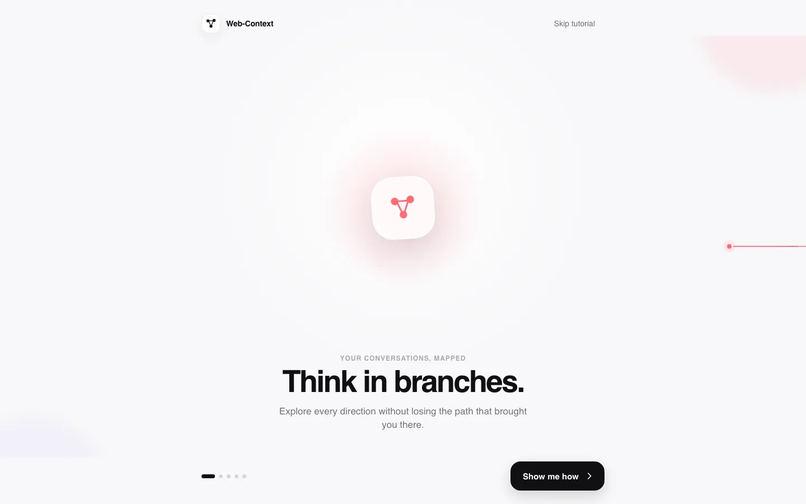
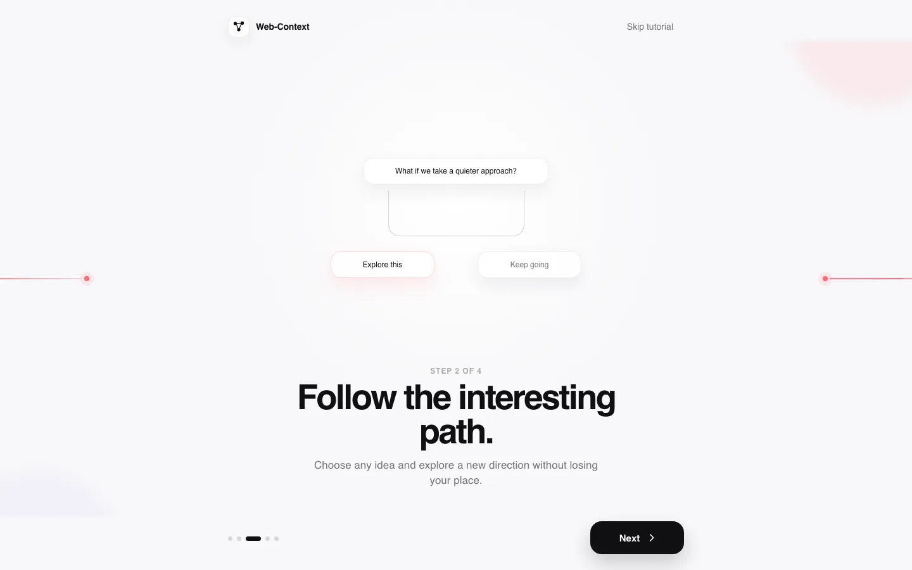
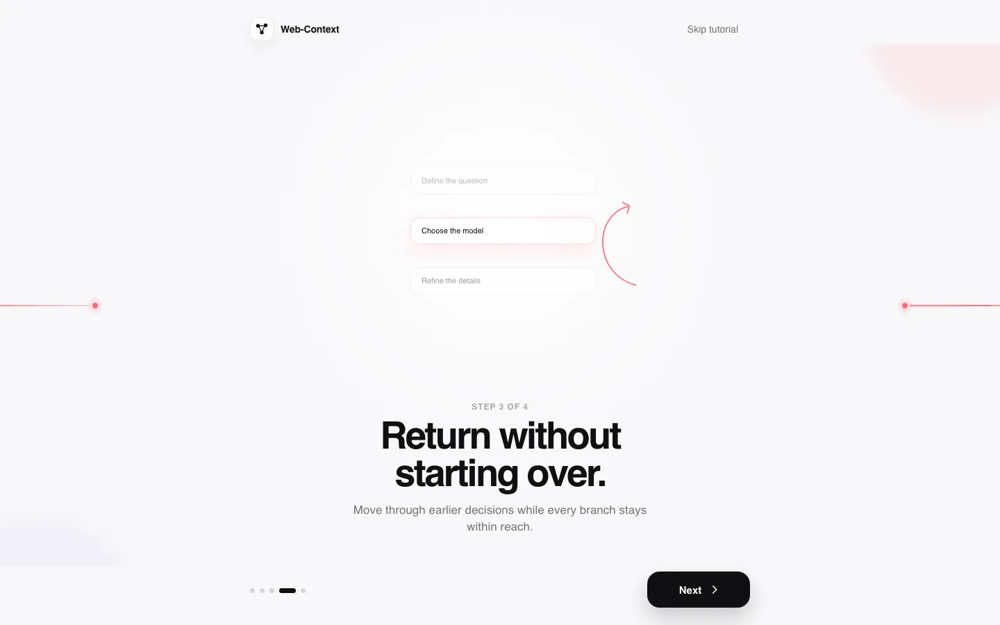
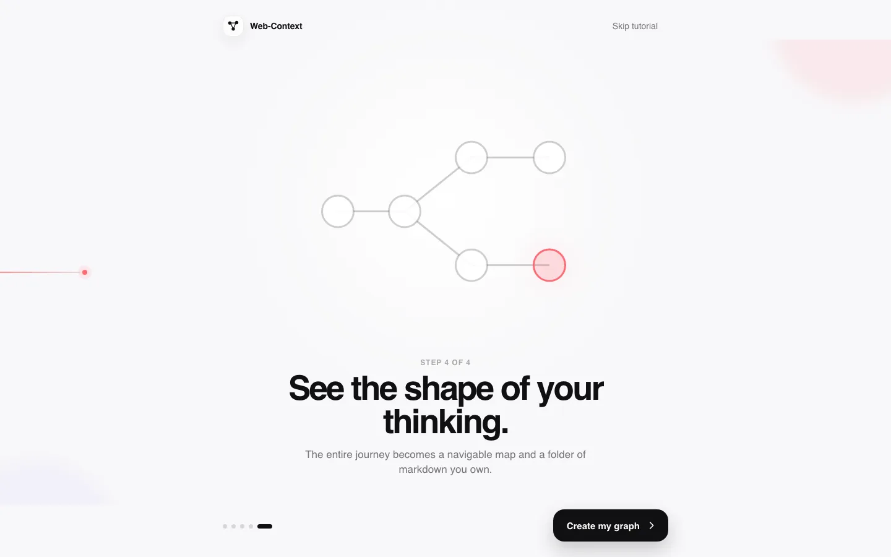

01
Chunking
Every idea has an address.
Responses become focused blocks you can copy, revisit, or branch from.

Your conversations, mapped
Explore every direction without losing the path that brought you there.

The first minute
The product tutorial is the product promise: split the answer, choose a direction, and keep the whole journey in view.
Chunking
Responses become focused blocks you can copy, revisit, or branch from.

Forking
Choose any idea and explore a new direction without losing your place.

Backtracking
Move through earlier decisions while every branch stays within reach.

Graph view
The entire journey becomes a navigable map and a folder of Markdown you own.

Stored locally
Your conversations live as readable Markdown and YAML, backed by Git history—not trapped inside a black box.
Working software
Run one command. Web-Context Graph uses your authenticated Copilot CLI and keeps the vault on your machine.
./scripts/run-local.sh
The current release is an open-source, single-user MVP—not a hosted service.
Your next direction
Keep every path within reach.